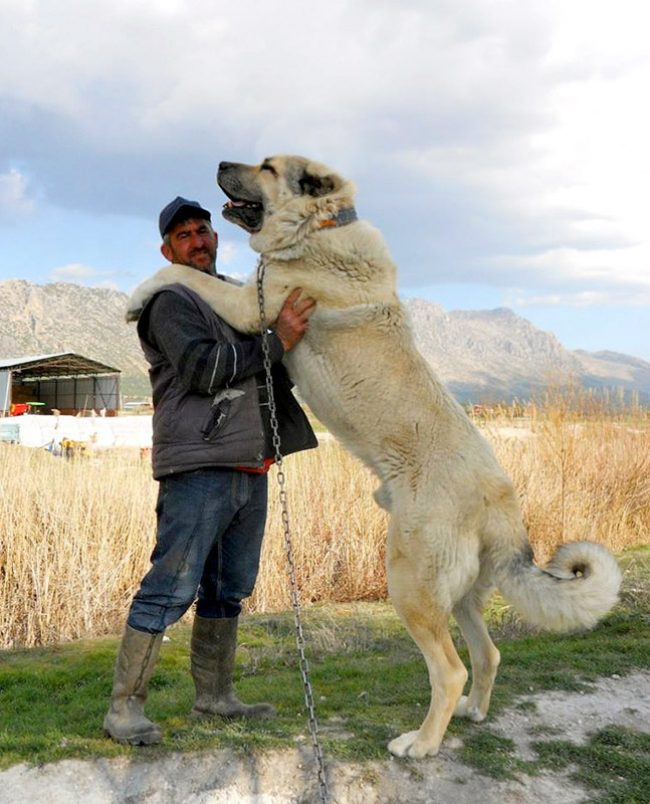

Різновиди порід собак
Сьогодні налічується понад 400 порід собак - зовсім крихітних (наприклад, чихуахуа, російський той-тер'єр, пекінес, йоркширський тер'єр і ін.) І величезних (німецький дог, сенбернар, англійська, іспанська, тибетський мастіфи), гладкошерстних (доберман, грейхаунд, далматин, американський стаффордширський тер'єр) і прикрашених довгою густою шерстю (мальтійська болонка, ши-тцу, афганський хорт, шапендуа). Основна відмінність породистих собак від безпородних (так званих дворняг) полягає у втручанні людини в їх поява і розвиток. Переважна більшість порід собак було створено працями генетиків-селекціонерів, чия робота була спрямована на виведення певного екстер'єру, характеру.
Виняток становлять аборигенні породи, що сформувалися ще в давнину природою під дією певного клімату (до них можна віднести самоїдів, середньоазіатських вівчарок і ін.). Породи собак створювалися для служіння людині в тій чи іншій області - на полюванні, у військовій справі, для охорони житла та інших теренах. Нерідко завданням учених було і виведення кімнатних декоративних собак, призначених лише для втіхи погляду власника.
Австралійські вівчарки
Австралійські вівчарки - дивовижні собаки, що відрізняються від безлічі інших порід не тільки своїми розумовими і робочими даними, але і незвичайною зовнішністю.Акита-ину
Акита-ину – это крупная и благородная порода собак, которая изначально использовалась для охраны королевской семьи и знати феодальной Японии. Также собак использовали для охоты на кабана, медведя и оленей.

Алабай
Середньоазіатська вівчарка або, як її ще називають, алабай - це стародавня порода собак, що виникла більше чотирьох тисяч років тому. Багато хто вважає, що порода з'явилася на території сучасної Росії.